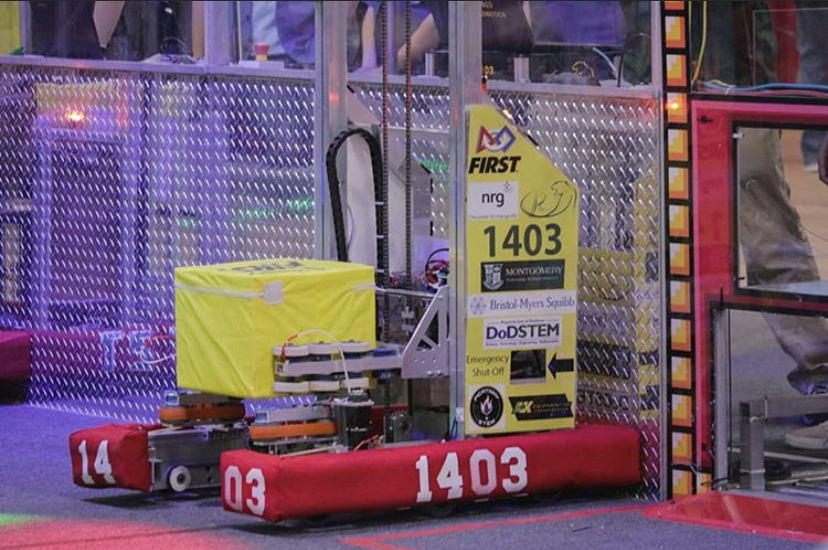

FIRST Robotics
In high school, I was heavily involved in my school’s robotics team, FRC Team 1403. I served as the Design Captain for three years, designing the CAD models of the robot and creating technical drawings for the Mechanical subteam so that they could manufacture and assemble subsystems accordingly. I also ran the CNC machine, which manufactured precise parts according to GCode. For this reason, I considered pursuing mechanical engineering in college before pivoting to computer science. However, the small amount of programming that I was exposed to when operating the CNC machine made me interested in at least exploring computer science a bit more.